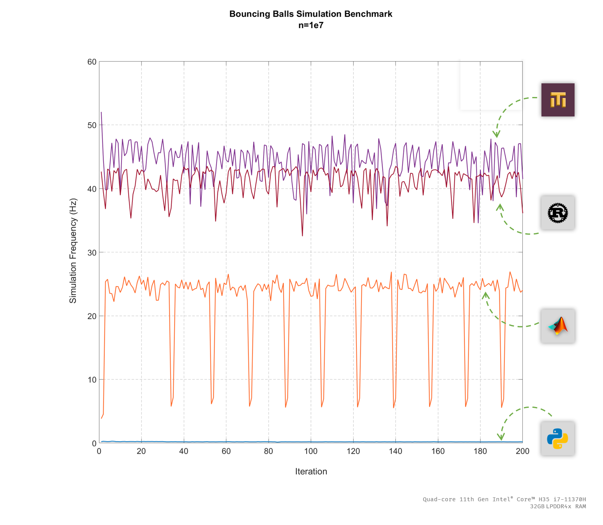
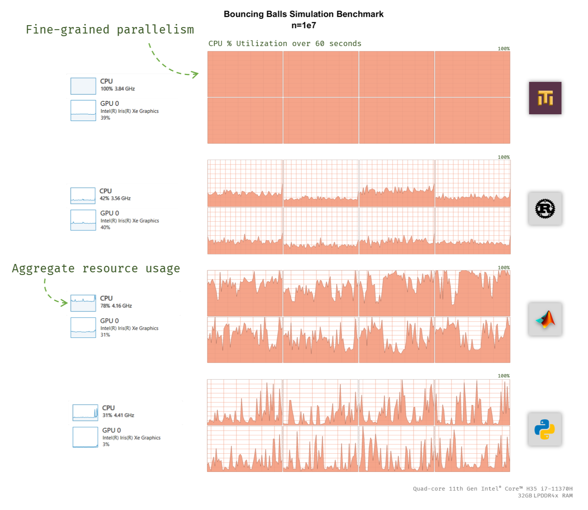

We're just about at the halfway point on our schedule to launch the beta in October, so I think it's an appropriate time for an update, especially as we have some new eyeballs from the HYTRADBOI conference last month. Somehow this post is longer than the last one which summarized 2 years of work, so I guess that goes to show how much has been done this year so far! Let's dive into all the new enhancements that were added to Mech since the beginning of the year.
🛠️ Platform Improvements
1. Physical units
Physical units have been a long time coming, and now we've finally implemented a prototype. This is done by leveraging the dynamic dispatch system and choosing functions specialized for operands of a particular unit. For example, multiplying a column typed as <m/s> and one typed as <s> will yield a column typed as <m>. At this point there's no symbolic dimensional analysis going on; we're just selecting from a list of pre-compiled functions that take the dimensions into account manually.
Units are specified the same way as the builtin datatypes:
x = 10<m> y = 20<m/s> z = 3000<ms> a = x + y * z ╭─────────────────────────────╮ │a (1 x 1) │ ├──────────────────────────────┤ │Length │ ├──────────────────────────────┤ │70m │ ╰─────────────────────────────╯
Right now only a few built-in units and scales thereof are hardcoded into the compiler, but in the future these will be user-specified in Mech code by adding rows to a table.
Now that we have physical units, we can have units-aware functions and tables. For example, #time/timer is now defined as:
#time/timer = [|period<s> ticks<u64>|]
Where we can see that the type of the period column is "s" meaning "seconds". The following video demonstrates specyfying the period in both seconds and milliseconds, and how Mech does the right thing by normalizing both units to a common scale.
Obviously this is just the beginning, and we'll have to to a lot more work to make this a more robust feature with more units and more functions that accept units. One big addition for next time will be the ability to define custom types within Mech rather than through the compiler.
2. Top-level Statements
You can now write statements without having to put them in a block, with the restriction that they can't query any global tables. The following is valid Mech code now (what's new is that it's not indented):
x = 10 + 15 y = 20 z = [1 2 3 4] q = z + y + x And the answer is... #value = stats/sum(row: q)
This is a subtle but huge change because it affects the way we can expose Mech to new users; it means that Mech looks more like a scripting language at first, but then can expand its capabilities with blocks and global tables.
I think this is a big win, because there's enough to think about with Mech without having to worry about asynchrony and distributed stuff right away. We can talk about all the new concepts in the language gradually, and then when the user is ready introduce the concept of blocks. I'm glad I figured this out now, because the entire framing of the beta documentation will now have to change.
3. Distributed Programs
At the beginning of the year I had just finihed the major portions of the runtime rewrite. After the post went live, I went to work getting the rest of the sytem converted over to the changes brought by the upated runtime. This entailed restoring distribution capabilities, which are demonstrated below fully operational again:
In this video, one Mech server is started in a terminal (the bottom one) which hosts the drawing code for the examples/demo program. In the other terminal, a second Mech server is started which hosts the simulation code for the examples/demo program. In a non-distributed context, these two programs would run on the same Mech core; but in a distributed context, the drawing code can run on the client while the simulation code can run on a remote server. This enables the ability to have a "thin" client of marginal power (and therefore cost), which only runs interface drawing code, while the remote machine running the simulation is much more powerful.
The video goes on to demonstrate the implication -- that because the simulation is running on a remote server, any clients that connect to it will have their output synchronized. Moreover, we can interact with the simulation from one browser and synchronize those interactions with the server, which are then furhter propograted to every other connected client.
The video below extends this concept to a game:
In this case, the centralized server runs the gamepad code. To that, we connect two clients that run different client code -- one client that displays a gamepad drawing, and another that displays a platform game with physics. Both browsers subscribe to the same data stream connected to the hardware gamepad.
4. Standalone Executables
The packaging and distribution story for Mech programs got a little more work this cycle. We've always packaged the Mech REPL and compiler as a standalone executable, and that can run on most platforms Rust can target. To run Mech programs, one typically has to invoke the Mech compiler as an interpreter; it will comile and run .mec source code in one step, the same way Python works. Mech has a JIT compiler, so it runs a lot faster than Pyton (see the next section for more on performance), but the interpretation step is still there.
What we can do for a standalone executable for a Mech program (without having to go through the interpreter) is compile .mec files into a bytecode, and store that in a file. I've decided to call it a .blx file (prounced "blocks"). This file format is essentially the raw output of the syntax compiler, right before it's JIT compiled.
So then what we can do for a quick and dirty self-contained executable is store that bytecode inside of the Mech interpreter. The interpreter itself is 5.7MB on Windows, which is quite large, but I have a feeling that this can be reduced to under 1MB. The core runtime itself is only 1.7KB, so I feel like there's a lot of fast I can trim from that executable. We'll see.
Here's a video demonstrating the various ways to package a Mech program at this time.
5. Mech Notebook GUI
From the start, the tagline for Mech has been that it's a language for "games, animations, and robots". After doing some GUI programming in Mech, I may just have to add "interfaces" to the list, because it works very well in that domain.
For the last couple of weeks I've been using the excellent egui crate to create a GPU-accelerated GUI for Mech. So far I've been wrapping the various UI elements for usage in Mech, and I've done enough to implement one of the longest-needed features for the language: a table browser! Check out the video below to see what happens when we open elements of the GUI inside of the GUI itself.
Recent work has been focused on the ability to write Mech code from within the editor itself, as you can do in Smalltalk.
6. Performance
In the last development update I spent some time talking about the various ways that we improved the performace of Mech for the new v0.1-beta runtime. The performance bechmark was mostly against Mech v0.0.6-alpha; although I did compare to Python at one point, it wasn't a very robust benchmark. Now we've done some performance benchmarking against some other languages and honestly I'm a little surprised at how well Mech performs:

According to our benchmark of the bouncing balls simulation (with n = 1e7 balls), Mech is not only very fast, but it turns out to be faster than all other languages tested, which includes Rust. Now, I'm not saying Mech is the fastest language around, but it does go to show that performance tuning works. The relative ordering of Mech and Rust here doesn't indicate anything; since Mech is implemented in Rust, we should expect performance to be similar if I've done my job right with the JIT compiler.
Actually single threaded Mech does not perform as well as Rust. Without parallel processing, Mech performance falls between Matlab and Rust in this comparison. It's only when parallel processing is turned on that Mech manages to beat Rust. As we can see in the following image, Mech makes full usage of all cores:

This is due to its use of the Rust work-stealing parallelism crate called Rayon, which obviously could be used to speed up the Rust version beyond Mech. Mech's value proposition here is that it will automatically provide fast parallel performance by default.
7. Tests
The testing harness is now written 100% in Mech. Before it was a combination of Mech code which ran the tests, but Rust code which aggregated them and produced printed output. Now Mech is running all of the testing and result aggregation through Mech itself. This milestone represents the first feature of the Mech platform implemented end-to-end in Mech.
Tests presents an interesting problem with typed columns, because the expected value of a test could be different depending on the operation under scrutiny. For example, the following code is problematic because we should be able to have a column with heterogenous types:
#mech/test += ["Addition" 2 1 + 1
"String Concat" "ab" "a" + "b"]
This kind of thing used to be possible in older versions of Mech, but since the new v0.1 runtime with typed columns, this has been forbidden. To implement testing though, we still need to support this, so now Mech has a wildcard type <_>. It's like an "Any" type, but it's not the default column type; you have to expliticly opt-in to a wildcard column. Accordingly, the #test table is defined as such:
#test = [|name<string> expected<_> actual<_>|]
This is implemented by keeping the elements of these columns wrapped in their Value enums. This allows them to coexist in the same column, but it's going to slow down computations as operands must be unwrapped dynamically on each function call. The tests are run with the following code:
#test/results = #test.expected == #test.actual
You can see the testing framework in action here:
8. Error Messages and Debugging
Debugging has been difficult in Mech since the beginning, but that all changes with the addition of error messages and other debugging features added over the last couple of months.
First, let's talk about error messages. One thing that's nice about Rust is that it forces programmers to handle error conditions, like when a program fails to parse or a file fails to open. What we've done recently with Mech is to make almost every function return a special Mech error code except the compiled Mech functions, so there is no possibility for a branch when evaluating them. This means that pretty much every error condition that could arise in Mech has a code that references a particular branch of the runtime, which allows us to easily discern what the error was.
pub struct MechError {
pub id: u64,
pub kind: MechErrorKind,
}
MechErrorKind allows us to further specify the kind of error that has occurred. Right now, most errors are either Generic, which is a string; or None, which is just a placeholder at this point. Before the beta release these will be replaced with more informative error messages, but at least for now we don't have to become mystified whenever a program isn't working. Now we look up the error code in the source, and we can see exactly where it failed. Obviously not user friendly, but it'll be better for the beta.
What's more, we added full compiler introspection that really supercharges debugging capabilities in Mech. With the -d flag, the compiler will now report all internal state, including that of blocks. In the video below, you can see the state which is inspectable at runtime:
Reflected runtime information includes:
-
Blocks:
- id and state
- input and output registers
- transformations and plan, with each step
- local tables
- block-level errors
-
Core:
- input and output registers
- loaded blocks
- loaded functions
- block schedule
- global tables
- block-level errors across all blocks
- core-level errors
With this information, it should be possible to debug almost any Mech program.
🐠 Ecosystem
1. New Machine Interface
The big news in the Mech ecosystem is that basically every machine has to change due to the new dynamic dispatch JIT compiler. But that's okay, because the change is well worth it. Nonetheless, this is a reminder of why Mech is alpha right now, and why nothing critical should be built on it at this point. It's also a good reason as to why I'm not fleshing out every single module I've started yet, because often that work needs to be redone.
Anyway, here's the change: machines that offer functions will now have to provide a compiler for those functions. That compiler must implement that following trait:
pub trait MechFunctionCompiler {
fn compile(&self, block: &mut Block, arguments: &Vec, out: &(TableId, TableIndex, TableIndex)) -> std::result::Result<(),MechError>;
}
What does this compiler do? It chooses a function based on the types of the input arguments. For example, adding two u8 numbers will choose an efficient implementation of add for u8s. If we add two u32s, then an implementation will be chosen for u32s.
I'm not exactly sure this won't change again in the future, but this is what it is for now. What I may change is that these mini compilers should return a plan rather than modifying the block's plan. Functions must also implement the following trait:
pub trait MechFunction {
fn solve(&self);
fn to_string(&self) -> String;
}
So far math, stats, compare, logic, and table have been upgraded to this new format. More will follow in the future.
2. Reorganization of html/wasm
It used to be that the wasm repository contained most of the code for drawing HTML and canvas elements, while the html machine repo was sort of a shell. Now that code has been abstracted out of wasm and moved into html proper. Unfortunately the code in wasm is still there, so that will be moved soon.
3. Mech ❤️ Sphero
After years work, I thought this day would never arrive. But here we have it, finally Mech is communicating with a Sphero directly via Bluetooth.
What it took to get here and why it took so long:
- For a long time there was a lack of adequate Bluetooth support for Rust under Windows. The state of Bluetooth crates on Rust for a while mostly focused on Linux. The Btleplug crate is one of the newer Bluetooth crates and one of the first ones to support BTLE on Windows, which the Sphero Bolt requires.
- There's also a lack of a proper Sphero SDK for Rust. Thankfully this very helpful Python driver exists, and I've ported portions of it to Rust. You can find that crate, sphero-rs, here.
So far I've only ported enough of the PySphero driver to cover the functionality I need for the Spring CHOICES event, which was held earlier in the year. See below for more details on that front.
Here's a demonstration of the Sphero being controlled with an Xbox controller.
All the code necessary to make this happen is written in Mech. Here's that code:
Connect to a gamepad #io/gamepad += [id: 100<u64>] Connect to a particular Sphero robot #sphero/robot += [id: "SB-C714"] Map controller state to robot velocity and heading #sphero/robot.speed := #io/gamepad.left-stick-y / 4 #sphero/robot.heading := (#io/gamepad.right-stick-x + 1) / 2 * 360
The code is very short, which is the promise of Mech as a language. What's going on here is that there are two tables #io/gamepad and #sphero/robot. As the buttons on the Xbox controller are pressed, #io/gamepad updates accordingly. The left stick y value and the right stick x value are mapped to the speed and heading of the Sphero robot, repsectively.
The Mech runtime handles all issues of data transport, serialization, and storage. It knows when the Xbox controller updates #io/gamepad, it also has to update #sphero/robot. Furthermore, Mech knows that when it #sphero/robot, this will trigger the associated machine to send the table contents to the Sphero robot, wirelessly over Bluetooth.
The Sphero machine is not part of the Mech standard library, so it's hosted under my personal account at github.com/cmontella/sphero-mech. You can find the Rust port of the Sphero crate at cmontella/sphero-rs. I'll add this to the Rust crates.io directory soon as I can get a student to clean it up and do the rest of the porting.
By contrast, the gamepad driver is a part of the Mech standard library and it's been added as a member of the io machine. You can find it at io/gamepad with some examples.
🏫 Outreach
1. Forward Robotics @ CHOICES
Forward Robotics (FR) is the outreach component of the Mech project which aims to educate kids about robotics. Over the Summer of 2020 a number of my students developed activities of the FR cirriculum, but we weren't able to test them on actual kids due to the pandemic. At long last, in early March Forward Robotics got its first playtest at the CHOICES program:
"Lehigh University's CHOICES program allows middle school girls to participate in a variety of fun engineering and science experiments designed to foster an interest in the future pursuit of science, technology, engineering and math (STEM)."
For our part, Forward Robotics deployed the robot bowling activity, in which students write Mech code to draw logos on the 8x8 Sphero Bolt display and then use the robot to knock over bowling pins. Here's an example of one of the team logos designed by kids at CHOICES:
🔵🔵⚪🔵🔵🔵🔵🔵 🔵⚪⚪⚪🔵🔵🔵🔵 🔵🔵🔵🔵🔵🟡⚪🔵 🔵🔵🔵🔵🔵⚪⚪⚪ 🔵🔵🔵🔵🔵🔵🔵🔵 🔵🔵⚪🔵🔵🔵🔵🔵 🔵⚪⚪⚪🔵🔵⚪🔵 🔵🔵🔵🔵🔵⚪⚪⚪
And here's that logo on the Sphero robot:
Some more logos designed by other teams including a rabbit and a turtle:
🟡🟡⚫⚪⚫⚪⚫⚫ 🟡🟡⚫🔴⚫🔴⚫⚫ ⚫⚫⚫🔵⚪🔵⚫⚫ ⚫⚫⚫⚪🔴⚪⚫⚫ ⚫⚫⚫⚪⚪⚪⚫⚫ ⚫🟢⚫⚫⚫⚫⚫🟢 ⚫🟠⚫🟢⚫🟢⚫🟠 ⚫🟠⚫🟠⚫🟠⚫🟠
⚫⚫⚫🟢🟢⚫⚫⚫ ⚫⚫⚫🟢🟢⚫⚫⚫ ⚫🟢🟤🟤🟤🟤🟢⚫ ⚫🟤🟤🟤🟤🟤🟤⚫ ⚫🟤🟤🟤🟤🟤🟤⚫ ⚫🟤🟤🟤🟤🟤🟤⚫ ⚫🟢🟤🟤🟤🟤🟢⚫ ⚫⚫⚫🟢🟢⚫⚫⚫
2. IROS 2022
We submitted a paper to IROS 2022 which will be held in October. This is the venue at which I plan to launch Mech, but if we don't get accepted to present we'll have to choose another venue (there are other good choices we can fallback on if necessary, or we can submit to an IROS workshop). The preprint needs to be cleaned up a little before I show it to everyone, so you can look forward to that in the future as a blog post.
3. HYTRADBOI 2022
We presented Mech at the "Have You Tried Rubbing A Database On It" conference on April 29th. This was a new (remote only) conference organized by one of my former colleagues on the Eve project, Jamie Brandon. The conference aims to bring bring people together who are working on data-centric applications to all sorts of problems.
It was a very well-attended conference for being new, so it actually served as kind of an unofficial soft launch for Mech, as it garnered the project more eyeballs than ever before. Reception was generally positive, but of course no one actually used Mech at the conference. We also got some signups on the mailing list and expressions of interest. In all, I think it was successful and worth while to submit and present.
If you weren't able to attend, here is the video that was presented:
4. ARRAY 2022
Mech has been accepted to present at the Array 2022 workshop hosted at PLDI. The presentation will be in San Diego on June 13th, 2022. I don't know if it will be recorded, but if it is I'll be sure to put a link in a future blog post.🤝 Project and Community
1. Repository Shakeup
The main Mech repository at gitlab.com/mech-lang/mech has been reoganized. This was due to the fact that versions kept getting out of sync between my local dev environment and the online environment. What I've done is create git submodules of the various repository in the mech-lang namespace. Now when someone wants to build Mech from source, they will have to clone the submodules first.
The new build process is as follows:
git clone https://gitlab.com/mech-lang/mech -b v0.1-beta --recurse-submodules cd mech cargo build --bin mech --release
2. Soft launch website
Since I figured the HYTRADBOI conference was going to attract a decent number of eyeballs, I did a quick refresh of the Mech website to include content from the talk. It's not written in Mech (it's mostly just pngs), but it's at least got a code sample and some rationale on the project.
A better website is still forthcoming for the Fall launch.
3. Logo
The logo has undergone a second revision. Embarassingly enough, until I put it on the Sphero LED display and looked at it from new perspectives, I didn't realize the logo we had settled on last time looked like "F-" when rotated 90 degrees.
And now I can't unsee it! Oops... not quite the message I want to send with the logo (I guess this is what designers are for). So I put it to my students and we agreed on a new revision. Here it is!
Which I think doesn't have any negative connotations in any orientation. Maybe it's a curse in a foreign language, but I'm happy with this for now. Also, I feel like it has autobot vibes, so it works on more levels than before:
4. Mailing List Signup
There was some actual interest in joining a mailing list at the HYTRADBOI conference, so there is now a mailing list sign-up on the home page. You can sign up for the mailing list below as well (pardon the lack of styling):
If you subscribe, be sure to check your spam folder for a confirmation e-mail, and to add talk@mech-lang.org to your trusted address list.
5. RSS Feed
Likewise there was interest in subscribing to the Mech blog so as to not miss when the launch happens. Accordingly, I created an RSS feed that people can subscribe to: http://mech-lang.org/feed.xml. I will post all new blog updates to the mailing list and the RSS feed.
🌞 Summer 2022 Roadmap
Whew, okay so that was a lot. Unfortunately, the pace can't let up if we want to make our October deadline. Here's what we're planning to accomplish this summer to stay on pace:
- Mech Notebook - The Mech notebook will be the main project for the first part of the summer. The goal there is to have something to demo at ARRAY 2022.
- gui Machine - As part of creating the Mech Notebook, we'll have to create a machine to render common gui elements like sliders, windows, panels, labels, etc. This will be a part of the standard library.
- Flesh Out Standard Library - The standard library is... spotty. I have a student this summer who will be filling in the gaps and implementing as much of it as he can.
- Documentation Revamp - The docs need to be completely rewritten. They were written for v0.4, so they are mostly out of date by now. This will be an ongoing project that will coincide with the fleshing out of the standard library.
- ARRAY 2022 - As I mentioned earlier, I'll be presenting Mech at ARRAY 2022, which is co-located with PLDI 2022. If you're going, let me know, I'd love to give you a demo!
- Summer CHOICES - Forward Robotics will be re-running the robot bowling activity at the CHOICES camp in June. At the Spring event we had a limited amount of time over a single afternoon, but the upcoming event will be over a couple days. Hopefully this means the students will get more time to write Mech code.
- Foundations of Robotics - In July and August I will be teaching my Foundations of Robotics course, which will leverage Mech on the Tegra, along with a number of sensors. I'll have to write drivers for all of the sensors we will use, as well as implement the matrix math functions needed to implement SLAM, RANSAC, and other algorithms we will be using.
- CAREER Grant Proposal - I still intend on submitting a CAREER proposal for this cycle, which would be due in July.
- SWAG - I'm going to comission a line of Mech SWAG like stickers and such that I can hand out at PLDI and IROS.
- Website Revamp - We'll launch a full new website. I will need to find a designer to do the work of creating the design, but the site will be fully implemented in Mech.
🎃 v0.1-beta Release Roadmap
By the end of Summer (Sep 22), I'm going to feature-freeze Mech. Everything that's not in at that time will have to wait until after v0.1-beta is launched. IROS 2022 will be held starting Oct 22, so if we're accepted to present at that conference then we will have about a month to test, fix bugs, and write documentsation and release material!
Thanks for reading if you made it this far. This post could probably have been shorter if I made them more frequent, but I kind of like the megapost update as it makes me feel like I've been productive. As I post this I already have more to talk about, but I've scoped this post roughly to work that happened between January and April.
That said, the update the Summer update at the end of August, but I will have some non-Mech update blog posts I will be